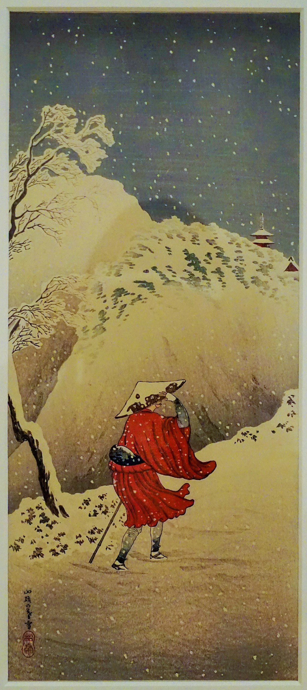

<head>
<meta charset="UTF-8" />
<meta name="keywords" content="drawing, painting" />
<meta name="description" content="drawings by Sunjy" />
<title>Sunjy</title>
<link rel="shortcut icon" type="image/x-icon" href="../../mImages/mCommon/favicon.ico" media="screen" />
<link rel="stylesheet" type="text/css" href="../../mCsses/mCommon/mCssA.css" />
<link rel="stylesheet" type="text/css" href="../../mCsses/mCommon/mCssB.css" />
<link rel="stylesheet" type="text/css" href="../../mCsses/mCommon/mCssC.css" />
<link rel="stylesheet" type="text/css" href="../../mCsses/mCommon/mCssD.css" />
<link rel="stylesheet" type="text/css" href="../../mCsses/mContent/mCssA.css" />
<link rel="stylesheet" type="text/css" href="../../mCsses/mContent/mCssB.css" />
<link rel="stylesheet" type="text/css" href="../../mCsses/mContent/mCssC.css" />
<link rel="stylesheet" type="text/css" href="../../mCsses/mContent/mCssD.css" />
</head>
<script type="text/javascript" src="../../mScripts/mContent/mContentAA.js" /></script>
<script type="text/javascript" src="../../mScripts/mContent/mContentAB.js" /></script>
<script type="text/javascript" src="../../mScripts/mContent/mContentAC.js" /></script>
<script type="text/javascript" src="../../mScripts/mContent/mContentAD.js" /></script>
<script type="text/javascript"></script> 
<script type="text/javascript">
document.write('<div class="mImgAbsolute"></div>');
/*
document.write('<p class="mFontSizeBColor" />From a white paper...</p>');
document.write('<table class="center"><tr><td>');
document.write('');
document.write('</td></tr></table>');
*/
</script>


<script type="text/javascript">
document.write('<p class="mFontSizeBColor" />Figure with Snow Falling</p>');
document.write('<p class="mFontSizeSColor" />“Figure with Snow Falling” by Takahashi Hiroaki depicts a man in traditional Japanese winter clothes making his way in falling snow trudging by trees and hills covered in the snow towards the traditional Japanese buildings in the background. Takahashi Hiroaki also was known as Shōtei  was a 20th-century Japanese woodblock artist in the shin-hanga art movement.<br><br>Takahashi Hiroaki was trained in Nihonga or “Japanese-style painting,” which is painting made following traditional Japanese artistic conventions, techniques, and materials. Takahashi’s work attempts to capture cultural and everyday life. He dedicated much of his time to paintings for exhibitions and illustrations for publications. His nostalgic “Old Japan” art is highly sought after by Western collectors.<br></p>');
document.write('<table class="center" /><tr><td>');
document.write('<br>Takahashi Hiroaki was trained in Nihonga or “Japanese-style painting,” which is painting made following traditional Japanese artistic conventions, techniques, and materials. Takahashi’s work attempts to capture cultural and everyday life. He dedicated much of his time to paintings for exhibitions and illustrations for publications. His nostalgic “Old Japan” art is highly sought after by Western collectors.<br>" />');
document.write('</td></tr></table>');
</script>


